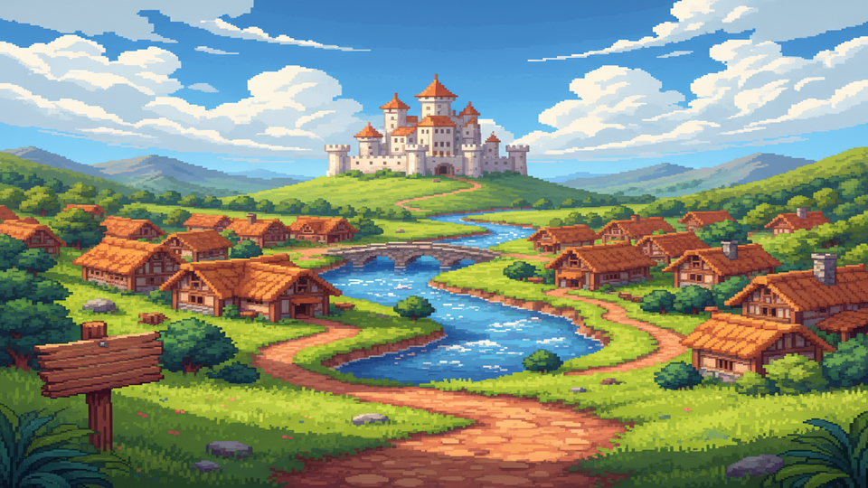
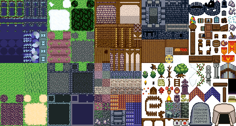
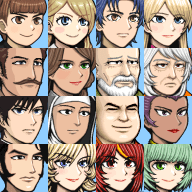
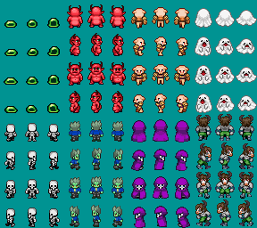
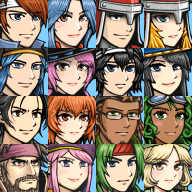
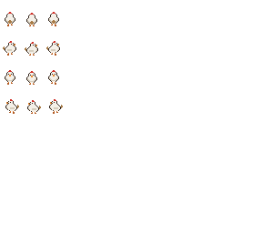
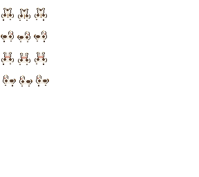

사용자 프롬프트 30+ 패턴을 에디터 실제 코드와 대조한 구현 가능성 분석 · 2026-07-20

결론부터 말하면 — "농사 + 계절 + 마을 + NPC + 상점"이라는 스타듀밸리의 뼈대는 이 에디터에 이미 내장되어 있습니다. 다만 스타듀밸리 특유의 실시간 조작감(낚시, 액션 전투)과 관계 시스템의 깊이(호감도 UI, 결혼)는 엔진 구조가 막고 있습니다.
프롬프트 한 줄이 전용 AI 도구 또는 런타임 기능으로 직결되는 영역. 우회 없이 "진짜" 기능으로 동작합니다.


전용 모델이 없어서 변수·분기·이벤트를 수동으로 엮어야 하는 영역. "된다"와 "제대로 된다"는 다릅니다.



노력의 문제가 아니라 런타임 아키텍처의 문제. 엔진을 고치지 않는 한 프롬프트로는 안 됩니다.
이 분류는 전부 런타임 아키텍처에서 나옵니다. RPG ZZU는 RM2k3 계보의 "선언적 JSON 프로젝트 + 순차 커맨드 인터프리터 + 턴/메뉴 UI" 엔진입니다. 이 프레임 안에서 표현 가능한 것(✅), 조합으로 억지로 엮이는 것(🟡), 프레임 밖이라 손댈 수 없는 것(❌)이 자연스럽게 갈립니다.